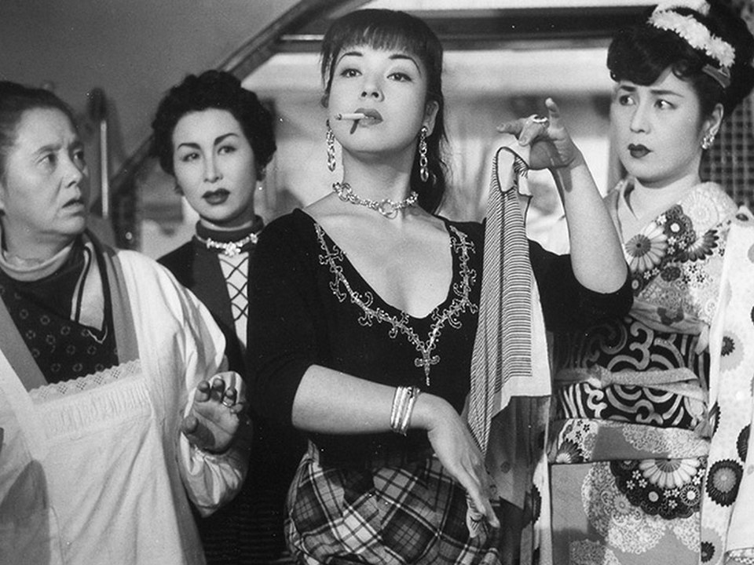

17:30 권장
김포공항 국제선 터미널 도착
대한항공 체크인 및 수하물 위탁. 출발 약 2시간 전 공항 도착을 기준으로 설정.


이번 여행에서 반복해서 오갈 거점을 한눈에 이해하기 위한 개요 지도
두 숙소를 중심으로 스미다강과 동쪽 도쿄 산책
도쿄국제영화제 · 영화관 · 서점 · 카페
국립영화아카이브 · 영화와 점심 동선
10월 30일 저녁 이후 클럽 방문
향후 일정 후보 · 사진과 산책, 독립서점


대한항공 체크인 및 수하물 위탁. 출발 약 2시간 전 공항 도착을 기준으로 설정.
하네다공항 제3터미널 도착. 일본 현지시각 기준.
Visit Japan Web QR 준비. 실제 수속 완료 시각에 따라 이후 교통편 결정.
하네다 제3터미널에서 게이큐선 탑승 → 센가쿠지(泉岳寺)를 거쳐 도에이 아사쿠사선으로 직통 운행. 23:09 마지막 직통편을 놓치면 23:37 출발의 환승 경로를 이용할 수 있어.
평일 시간표 기준: 마지막 직통 23:09→23:54 · 최종 환승 경로 23:37→00:23(익일)5-6-10 Asakusa, Taito-ku, Tokyo 111-0032. 아사쿠사역에서 도보 이동.
이동 노선: 게이큐 공항선 → 도에이 아사쿠사선 직통(열차에 따라 센가쿠지 환승).
이동 시간: 직통 약 41~45분 · 최종 환승 경로 약 46분.
일반 운임: IC 약 ¥599 / 승차권 약 ¥610.
평일 마지막 직통: 23:09 출발 → 23:54 아사쿠사 도착.
평일 최종 환승 경로: 23:37 출발 → 00:23 아사쿠사 도착(다음 날).
숙소까지: 아사쿠사역에서 도보 이동 추가.
※ 마지막 직통과 환승 경로는 현재 공개된 평일 시간표 기준. 2026년 10월 29일 실제 운행은 변동될 수 있어 출발 직전 재확인. 00:08 시나가와행 막차는 아사쿠사까지의 연결을 보장하지 않으므로 제외했어.
호텔에 짐 보관. 아침 이동 계획 유지
휴릭 홀 도쿄 이동 및 상영 준비
휴릭 홀 도쿄 · 단편 5편 133분 + Q&A 예정 · 예매 완료. Q&A 종료 시간 변동 가능
1순위 소바요시 교바시점. 촉박하면 Gallery & Bakery Tokyo 8분에서 빵·샌드위치
국립영화아카이브 · 미조구치 겐지 · 85분. 10월 27일(화) 정오 예매 오픈 예정
후지이 히카루 《WHOSE LIGHT?》 + 《에트랑제들 — 서양화가들의 유럽 경험》. 통합 입장권, 별도 카페 생략
숙소 이동, 먼저 도착한 친구와 합류
OPTION A │ TAIKO 야키토리 · 료고쿠 · ¥4,000–6,000
OPTION B │ 모헤지 몬자야키 · 료고쿠 · ¥2,000–4,000
료고쿠역·국기관 → 스미다강 리버테라스 → 구라마에바시 왕복 → 호텔
소요 시간 약 25–40분

15:00–16:25 · 국립영화아카이브 · 디지털 복원판
후지이 히카루 《WHOSE LIGHT?》 — 역사·재현과 영상의 현대미술.
《에트랑제들 — 서양화가들의 유럽 경험》 — 일본 근대 서양화가들의 유럽 경험과 회화
한 장으로 동시 전시 관람 가능 · 금요일 20:00까지. 카페는 생략해 감상 시간 확보
전시·입장권 ↗대표 메뉴: 닭 숯불구이·오야코동 (예상 식사비 ¥4,000–6,000 / 1인)
영업 시간: 16:00–23:00
예약 가능 여부: 예약 가능 · 온라인 및 전화
전화: 03-3634-1235
Google Maps ↗ 타베로그 ↗대표 메뉴: 몬자야키 (예상 식사비 ¥2,000–4,000 / 1인)
영업 시간: 10:45–23:00
예약 가능 여부: 예약 가능 · 온라인 및 전화
전화: 03-6658-5159
Google Maps ↗ 타베로그 ↗코스: 식당 → 료고쿠역·국기관 → 호텔 앞 스미다강 리버테라스 → 구라마에바시 방향으로 왕복 → 호텔
소요 시간: 약 25–40분
Google Maps 도보 경로 ↗호텔에서 출발해 시모키타자와로 이동.
출발 시간은 점심 선택에 따라 조정 가능.A. 구 야무테이 시모키타소 · B. 나스 오야지 · C. ANDON
토요일 대기 시간 고려.Stick Out · FLORIDA → FLAMINGO · 古着屋JAM 등.
실제 매장 영업시간과 점심 위치에 따라 조정.NEW YORK JOE → RAGTAG 또는 meadow by FLAMINGO.
3~5곳 정도를 집중 방문하는 편이 좋아.독립서점, 일기 전문점, 레코드숍과 작은 상점 구경.
저녁 행사 전 일반 영업 가능 범위를 확인.오다큐선 시모키타자와역 → 세이조가쿠엔마에역.
이동 중 급행·각역정차 정차역 확인.A. 식사처 쓰다 · B. 코토부키야 · C. 깃쇼안.
친구와 결정 · 공연 19시 입장 전에 마무리.19:00 입장 / 19:30 시작 · 2명 티켓 예약·결제 완료.
공연 종료 시각 미확정.세이조가쿠엔마에 → 신주쿠 → JR 소부선 료고쿠.
막차 및 최종 환승은 당일 확인.TOHO 시네마즈 샹테
본편 약 101분 · Q&A 포함 예상 종료 15:45
다이칸야마역에서 만나 함께 이동
가구·소품·디자인 구경
마키 후미히코 설계 · 정원과 건물 외관
유럽 빈티지 의류·앤티크 소품
골목 및 메구로강 방향 산책
독립 헌책방 · 사진집·예술 서적
저녁 식당으로 이동
후보 A 하시다야 / B 세이린칸
나카메구로역에서 전철 이용
힐사이드 테라스 F동 · 가구, 조명, 디자인 소품
공식 사이트 ↗ Google Maps ↗사진집·미술·영화·잡지와 해외 서적을 다루는 독립 헌책방
매장 정보 ↗ Google Maps ↗
지하철 이동
커피 · 창고형 로스터리 카페
일본식 회유정원 · 연못·이소와타리
도자기 · 직물 · 생활용품 · 11:00 오픈
홍차 · 틴케이스 · 티웨어
대중교통 이동
OPTION A │ 나미키 야부소바 · OPTION B │ 대흑가 텐푸라 · OPTION C │ 야코 장어덮밥
가미나리몬 · 스미다강변 · 수상버스 선착장 방향
탑승 준비 · 수상버스 티켓 확인
아사쿠사 → 오다이바 해변공원 · 일몰 무렵 스미다강
레인보브리지 야경 · 해변 산책
OPTION A │ 아쿠아시티 · 오니츠카 타이거 · OPTION B │ 다이버시티 · BEAUTY & YOUTH / CITEN / COS / HUF
2명 · 호리고타쓰 좌석으로 예약 · 예약 시간 확인 필요
유리카모메 → 신바시 → 지하철·JR

THE GATE HOTEL RYOGOKU 체크아웃 · 게이세이우에노역 이동
게이세이우에노역 수하물 보관 카운터
도보 약 5분 · 현장 티켓 구매
유럽 근대미술 특별전
공원 주변 산책
OPTION A │ 인쇼테이 · OPTION B │ 우에노 야부소바 · OPTION C │ 텐푸라 미야
짐 찾기 · 스카이라이너 탑승 준비
게이세이우에노 → 나리타공항 제2·제3터미널역
면세 확인 · 수하물 위탁 · 출국 수속
나리타 → 인천
기존 면세 제도 적용
새로운 환급 방식 적용
면세품을 캐리어에 넣었다면 세관 확인을 마치기 전에 위탁수하물로 부치지 않기
세관 확인과 실제 환급은 별도 절차이며, 환급 방식과 지급 시점은 구매처에 따라 다름
새 면세 제도 안내 ↗ 나리타공항 환급 안내 ↗